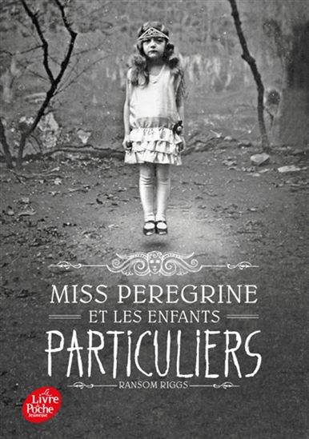

Miss Peregrine et les enfants particuliers
Auteur : Ransom Riggs
Genre: Fantastique / jeunesse
Année de publication: 2011
Langue: Anglais et Français

Sommaire
Jacob, un ado de 16 ans, a grandi en écoutant les histoires incroyables que son grand-père Abraham lui racontait. Il a grandi dans un orphelinat pendant la 2e guerre mondiale, et cet orphelinat disait-il, était peuplé d’enfant possédant des capacités surnaturelles : une fille qui lévite, un garçon invisible...
Jacob a toujours cru que son grand-père améliorait ses histoires pour rendre les horreurs de la guerre un peu plus supportable. Un jour, Abraham est retrouvé mourant dans le bois derrière chez lui. En le trouvant, Jacob aperçoit une créature terrifiante que personne d’autre ne semble remarquer.
En suivant les indices laissés par son grand-père, Jacob se rend avec son père sur une île du pays de Galles où se trouvait l’orphelinat et y découvre ses ruines, détruit pr un bombardement allemand en 1940... Et les enfants encore vivants à l’intérieurs! Et ils n’ont pas vieilli d’une miette!
Critique
Les pouvoirs étranges, les mystères, l’atmosphère sont tous les éléments qui m’ont fait adorer ce type d’histoire.
Le déroulement s’enchaîne superbement bien et les personnages sont attachant dès le début.
Moment favori
Quand Jacob découvre que son grand-père n’est pas aussi fou qu’il pensait et que ses histoires se sont vraiment produites
Moment moins fort
Le caractère un peu trop enfantin de l’histoire.
Je sais, c’est un roman pour ado, mais il y en a plein qui sont un peu moins «jeunes» que celui-là.
Ce n’est pas une faiblesse en soi, au contraire, si ça peut amener des jeunes vers la lecture, tant mieux!